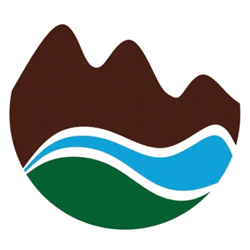

Projects
Bonner's Bazaar store logo
- Bazaar means a large shop selling miscellaneous goods.
- Brown bag focuses on handcrafted items, a brown bag logo can help convey the natural, artisanal quality of the products.
Mytholmroyd Community Train Station logo
- Two green leaves symbolise life, growth, connection and nature.
- Two figures joined to each other symbolise community and unity.
- The train station sign rotated 90 degrees form the two figures.

Adamah contracting LTD logo
- The word Adamah in Hebrew means ground or earth.
- When you think about earth - water, soil and sky.
- Three main colours are green, brown and blue.